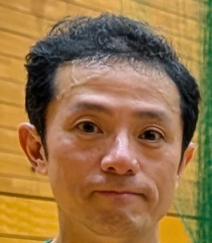
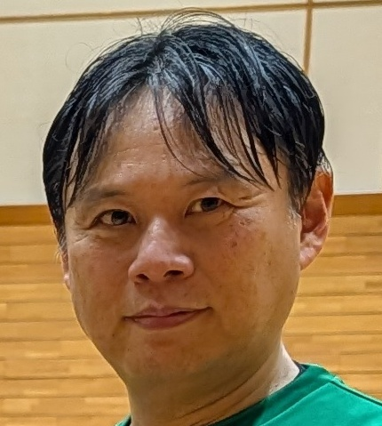
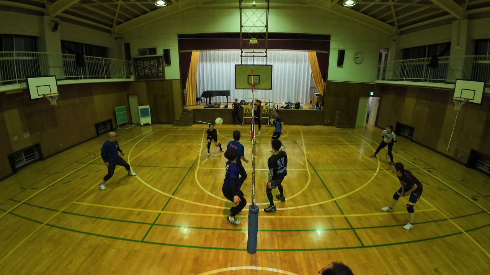
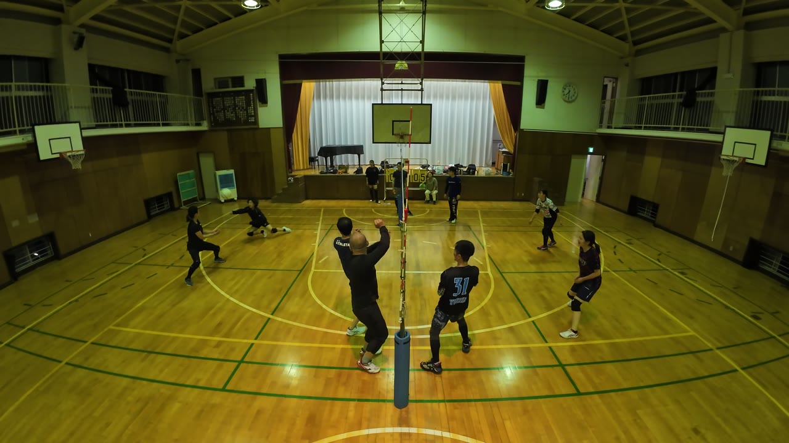
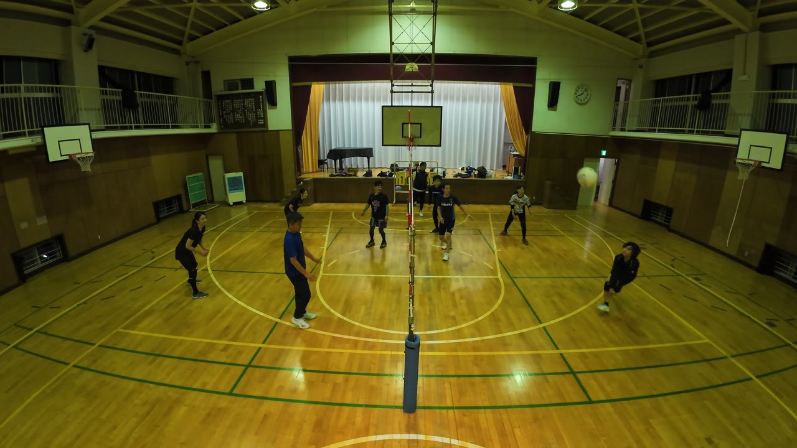

床に飛び込んで拾いにいく人が多かった日。長く続くラリーもたくさんありました。時刻をタップすると、その場面から動画が再生されます。
ダイジェスト




73:58 やっさん のフェイントを読み切ってカット。頭脳プレーです。74:08 では本人がMVPをアピールしています。

73:5883:14 ではスーパーレシーブも見せています。
床に飛び込んでナイスレシーブ。

3:52そのあとも、届かなくても何度も飛び込んでいます。55:14 81:46 84:57 93:56
1本のラリーでスーパーレシーブを2回(41:39 41:50)。そのラリーは最後に せんせい の強烈なアタックで決まりました。

41:39Produced by けんぴー(AI)